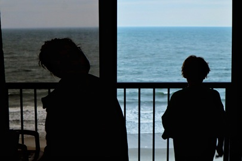

Color Photography
"You don't take a photograph, you make it."
- Ansel Adams
"The earth is art, the photographer is only a witness."
- Yann Arthus-Bertrand

"Photograph: a picture painted by the sun without instruction in art."
- Ambrose Bierce


"All photographs are accurate. None of them is truth."
- Richard Avedon
"I've always believed that photography is a way to shape human perception."
- James Balog